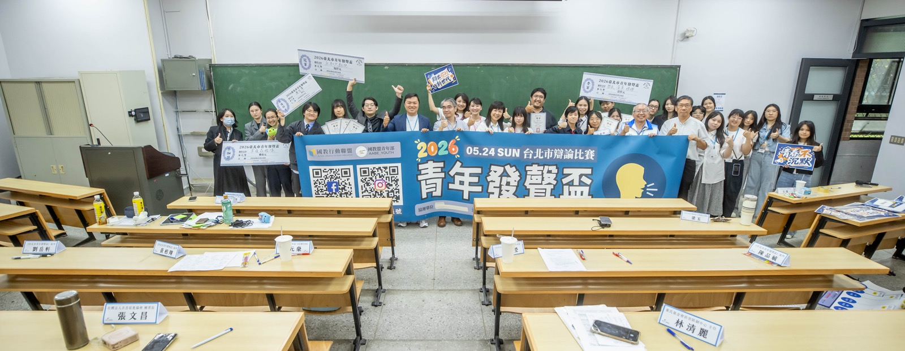
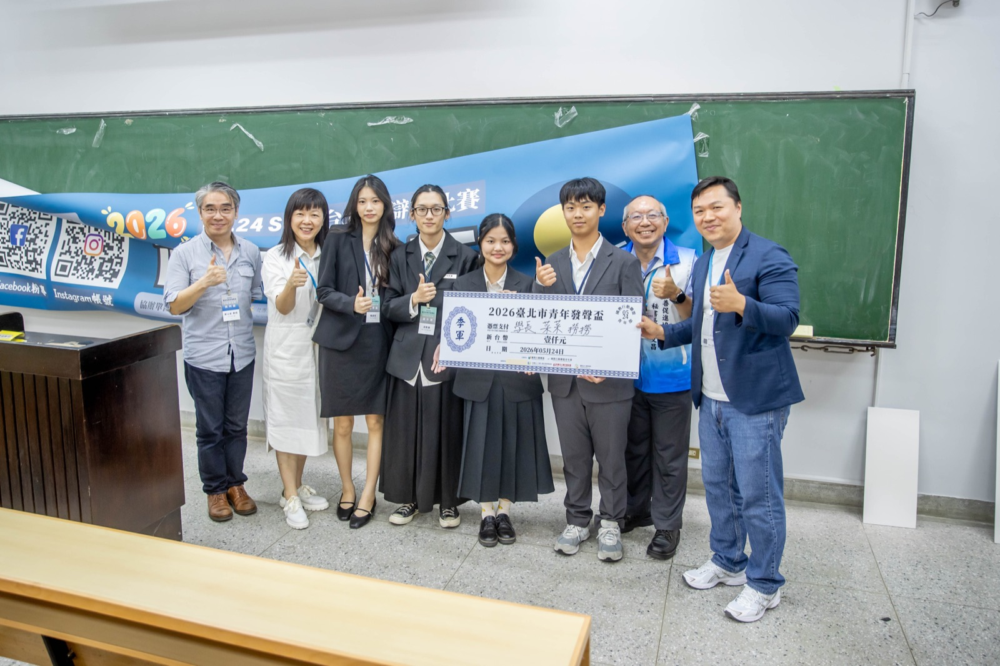

響應世界無菸日，青年辯論賽檢驗北市無菸城市
國教盟青年部：不是放幾座吸菸室，就叫真正無菸
青年關注二手菸外溢、執行配套與新興菸品管理

▍2026.05.24 臺北市青年發聲盃「無菸城市」辯論賽 ─ 正反雙方學生於國立臺灣大學應用力學研究所合影
響應世界無菸日，國教行動聯盟青年部今（1）日指出，台北市無菸城市政策近期陸續上路，心中山線形公園已自 5 月 1 日起實施「除吸菸區外不得吸菸」，西門町商圈也將自 6 月 1 日起進入除吸菸區外全面禁菸；市府並於 5 月 7 日啟用首批負壓式吸菸室，將西門商圈、心中山線形公園等列為無菸城市示範場域。
國教盟青年部執行長李雨函表示，無菸城市上路不是終點，而是政策壓力測試的開始。青年關心的不是台北市「有沒有設吸菸室」，而是吸菸室是否可能造成二手菸外溢？稽查與維修是否跟得上？加熱菸是否會成為新挑戰？
國教盟青年部於 5 月 24 日假國立臺灣大學應用力學研究所舉辦「2026 臺北市青年發聲盃公共議題辯論賽」，與全球慈善行動協會、中華仁親社區關懷協會、國際兒少人權促進會、董氏基金會共同主辦，邀集北北基桃國中、高中職及大專院校學生跨校組隊，針對「您是否支持 2026 年台北市推動『無菸城市』之政策？」進行辯論。

▍辯論賽閉幕大合照 全體與會師生與主辦單位於賽事結束後合影
本次辯論賽得獎隊伍

國立臺北教育大學
國立臺灣海洋大學

淡江大學
國立臺灣師範大學

中原大學
國立臺灣科技大學
評審團由具辯論、教育、法律與公共政策背景之專業人士擔任，並邀請台北市議員曾獻瑩、東吳大學法律學系助理教授廖元豪擔任冠亞賽社會裁，從城市治理與公共政策角度檢視青年論證。
國教盟青年部指出，依台北市研考會民調，96.2% 市民支持在大型活動或人潮較多公共場所採取無菸管理，85.7% 市民支持在公共空間設置戶外吸菸室。這代表無菸城市具備民意基礎，但民意支持政策方向，不代表吸菸室可以被包裝成零風險。
辯論中，反方學生提醒，若吸菸者被集中到指定吸菸區，但設置位置不當，周邊住宅、商家與行人動線反而可能承受二手菸外溢，形成新的「受災戶」。國民健康署 113 年國人吸菸行為調查也顯示，室外公共場所二手菸暴露率仍達 48.9%，最常暴露地點包括馬路、街上、騎樓等戶外通行場所 27.9%，公園及風景區、連鎖便利商店門市前騎樓各 7.7%，餐飲店室外及露天餐飲場所等 6.3%。這表示無菸城市不能只是把吸菸者集中管理，更要處理場址選擇、人流動線與二手菸外溢。
近期媒體也報導，部分民眾對北市新設負壓式吸菸室表達疑慮，擔心吸菸室周邊仍可能出現菸味、影響行人與商家環境，並質疑相關設備長期維護與監測機制是否足夠。國教盟青年部認為，這些討論反映社會對無菸城市政策的高度期待，也凸顯市府除了設置硬體設施外，更應持續公開監測數據、維護紀錄與稽查成果，讓政策接受社會檢驗，建立民眾信任。
正方學生則強調，無菸城市是值得推動的政策方向，不能因為執行困難就放棄。但若稽查人力不足、違規取締不明確、戶外吸菸設施維修延宕，政策就容易停留在口號。青年認為，真正的無菸城市不能只有宣示，還必須有穩定稽查人力、明確維護責任、清楚裁罰標準與民眾通報機制。
國教盟青年部執行長李雨函也指出，加熱菸已是新興菸品治理的重要問題。日本東京新宿區已自 2025 年 7 月 1 日起，將加熱式菸品與紙菸一樣納入路上禁菸範圍。台北市若推動無菸城市，卻未明確將加熱菸納入規範，將造成執法與宣導上的灰色地帶，也可能讓青少年誤以為加熱菸不在無菸城市管理範圍內。
基於本次辯論賽觀察，國教盟青年部建議，戶外吸菸區應避免以負壓、過濾等技術語言弱化二手菸風險，並審慎評估設置地點；稽查、修繕與通報機制應同步到位，讓市民清楚了解管理與維護責任；對於加熱菸等新興菸品，也應及早建立一致且明確的管理原則，避免執法與宣導出現落差。
「我們很支持無菸城市，但不要設置戶外密閉式吸菸室；不要宣傳吸菸室有負壓、有過濾設備，就沒有二手菸了；不要為了一個良善的目的，宣傳錯誤的觀念。」
—— 郭斐然｜台大醫院家庭醫學部主治醫師、台灣醫界菸害防制聯盟秘書長
郭醫師指出，密閉式吸菸室不僅難以完全阻絕菸害外溢，更可能因為「有設備即安全」的暗示效果，弱化民眾對二手菸危害的警覺。
WHO 2026 年世界無菸日主題為「Unmasking the appeal – countering nicotine and tobacco addiction」，呼籲各國強化規範與防制措施，保護年輕世代免於菸草與尼古丁成癮危害。國教盟青年部表示，台北市推動無菸城市，不應只是空間管理，更應成為保護青少年、降低二手菸暴露、完善新興菸品治理的城市示範。
「這場辯論賽展現青年世代對公共政策的理性參與。無論支持或反對，青年們提出的論點都指向同一個核心：我們要的不是『看起來無菸』，而是『真正無菸』的城市。」
—— 李雨函｜國教行動聯盟青年部執行長
李雨函呼籲，台北市政府應把青年辯論賽提出的政策疑問，視為無菸城市上路後的重要壓力測試，持續檢視吸菸區設置原則、二手菸外溢風險、稽查人力、設備維護與加熱菸管理方式。無菸城市不能只是把吸菸行為移到另一個角落，而應讓市民有感，也讓青年相信政策不是形式，而是承諾。
常見問題
台北市無菸城市政策進度到哪了？
心中山線形公園自 2026 年 5 月 1 日起實施「除吸菸區外不得吸菸」，西門町商圈自 6 月 1 日起進入除吸菸區外全面禁菸；市府於 5 月 7 日啟用首批負壓式吸菸室，將兩處列為無菸城市示範場域。
什麼是負壓式吸菸室？真的能阻絕二手菸嗎？
負壓式吸菸室靠機械抽風維持內部氣壓低於室外，理論上可避免菸味外洩。但醫師指出，密閉式設施難以完全阻絕菸害外溢，更可能因「有設備即安全」的暗示效果，弱化民眾對二手菸危害的警覺。
戶外二手菸暴露問題有多嚴重？
國民健康署 113 年調查顯示，室外公共場所二手菸暴露率達 48.9%，最常暴露地點為馬路、街上、騎樓等戶外通行場所 27.9%，公園與便利商店門市前騎樓各 7.7%，餐飲店室外與露天餐飲場所等 6.3%。
台北市民支不支持無菸城市？
依台北市研考會民調，96.2% 市民支持大型活動或人潮較多公共場所採取無菸管理，85.7% 支持在公共空間設置戶外吸菸室，民意基礎清楚，但不代表吸菸室可以被包裝成零風險。
為什麼加熱菸是新的城市治理漏洞？
日本東京新宿區已自 2025 年 7 月 1 日起把加熱式菸品與紙菸一樣納入路上禁菸範圍。若無菸城市未明確納管加熱菸，將造成執法灰色地帶，也可能讓青少年誤以為加熱菸不在管理範圍內。
國教盟青年部提出哪三項建議？
第一，戶外吸菸區應避免以負壓、過濾等技術語言弱化二手菸風險，並審慎評估設置地點；第二，稽查、修繕與通報機制應同步到位；第三，加熱菸等新興菸品應及早建立一致且明確的管理原則。
青年發聲盃辯論賽的得獎隊伍是哪些？
第一名「永和小戲院」（北科大、北教大、海大）、第二名「我們都是大寶寶」（北教大、淡江、師大）、第三名「學長 菜菜 撈撈」（世新、中原、台科大），跨校組隊展現青年公共參與意識。
新聞聯絡人
- 國教行動聯盟青年部 執行長 李雨函 0930-608-353
- 國教行動聯盟 理事長 王瀚陽 0983-097-165
附件參考資料
- 臺北市政府衛生局｜公告心中山線形公園為除吸菸區外不得吸菸場所（2026 年 5 月 1 日起）
https://health.gov.taipei/News_Content.aspx?n=BB5CA6D6A6F5A6D8&sms=72544237BBE4C5F6&s=16F306ADFD4CEC7F - 臺北市政府衛生局｜公告西門町商圈為除吸菸區外不得吸菸場所（2026 年 6 月 1 日起）
https://health.gov.taipei/News_Content.aspx?n=BB5CA6D6A6F5A6D8&sms=72544237BBE4C5F6 - 中天新聞網｜北市負壓式吸菸室相關爭議與民眾意見報導
https://ctinews.com/news/items/gOnLQjNJWk - 衛生福利部國民健康署｜113 年國人吸菸行為調查結果
https://www.hpa.gov.tw/Pages/List.aspx?nodeid=1718 - 衛生福利部國民健康署｜菸害防制專區與調查統計資料
https://www.hpa.gov.tw/Pages/List.aspx?nodeid=41 - World Health Organization (WHO)｜World No Tobacco Day
https://www.who.int/campaigns/world-no-tobacco-day - World Health Organization (WHO)｜Tobacco Fact Sheet
https://www.who.int/news-room/fact-sheets/detail/tobacco - 東京都新宿區｜路上喫煙禁止條例（路上喫煙の禁止）
https://www.city.shinjuku.lg.jp/seikatsu/file04_00001.html - 國教行動聯盟青年部（2025）｜2025 年台灣青少年最關心的十大議題調查報告
https://drive.google.com/file/d/1eXG5NWeRKY7NejkYqW1WHqA7AXuIAHSo/view?usp=sharing - 國教行動聯盟青年部｜青年發聲盃辯論賽活動照片
https://drive.google.com/drive/folders/1XX6tv1iUASswFPOtGsUDjydChjpZcF3L
本新聞稿引述之數據與資料以上述官方來源為準。媒體採訪請聯繫上方新聞聯絡人。